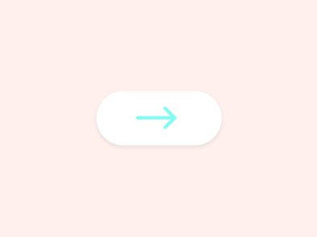
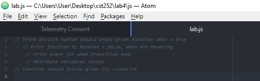

Lab 4: Pseudocoding & Problem Solving
Subject
The subject of this lab is to pseudocode an everday task, then psedocode a computer task. Then put that into a js file and create this page about the process.
Challenges
We had trouble writing the pseudocode for the js task because we didn't know javascript. We used google to see how a transition would work in js and work from there
Results
This page is the result of the lab.
Task 1 - Cooking Eggs
1. Get your Eggs and pan ready. 2. Put oil in the pan 3. Adjust the temperature until oil is hot enough. 4. Crack your eggs into the pan 5. Cook egg until whites no longer wet 6. Season eggs if you want 7. Take out of pan 8. Serve and eat eggs.
Task 2 - Hover Transition 
1. Write css/html code for hover in your preferred program. 2. Adjust the size and timing of effect of the hover. 3. Test locally before testing online. 4. Verify the hover effect shows up on the button when the user hovers over. 5. Receive feedback from users on their experience.
Task 3 - JS Comments
